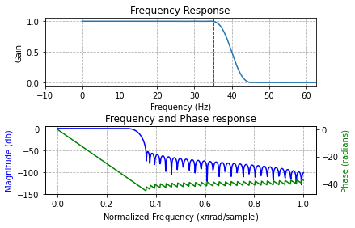
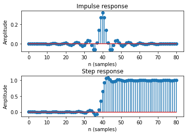
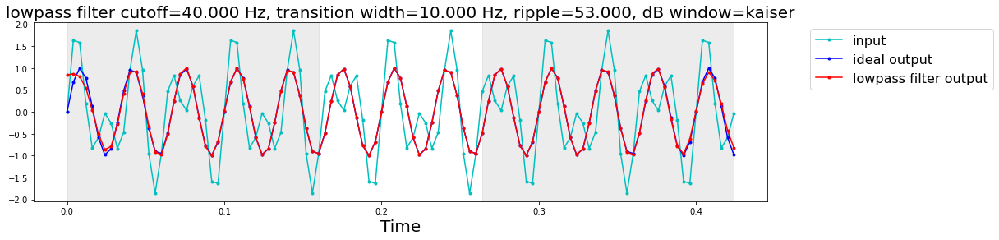
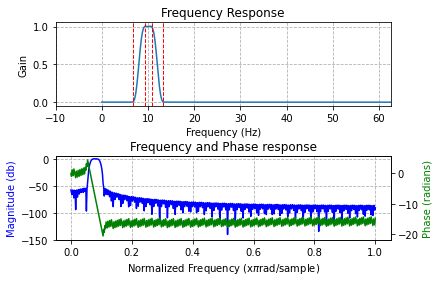
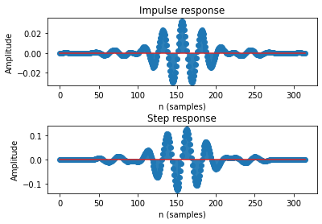
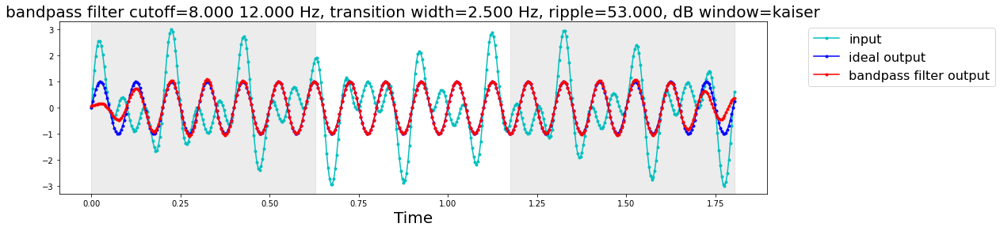
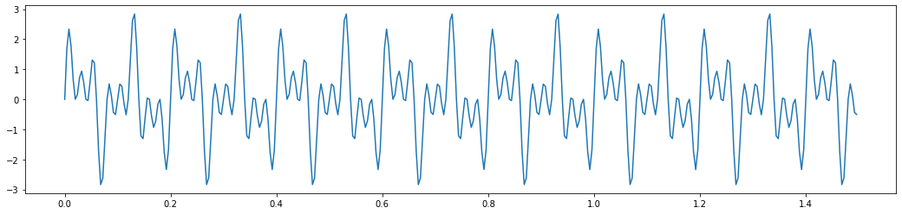
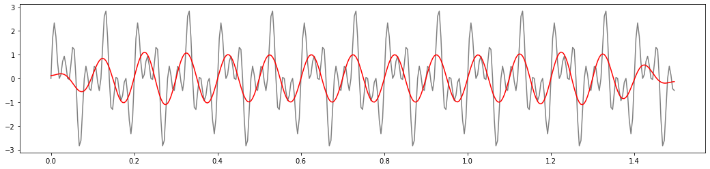

[1]:
import numpy as np
import pandas as pd
from matplotlib import pyplot as plt
from spudtr import filters
from spudtr import get_demo_df, P3_1500_FEATHER
Design a lowpass filter¶
[2]:
ftype = "lowpass"
cutoff_hz = 40.0 # 1/2 amplitude
sfreq = 250.0
filters.show_filter(ftype=ftype, cutoff_hz=cutoff_hz, sfreq=sfreq);
lowpass filter
sampling rate (samples / s): 250.000
1/2 amplitude cutoff (Hz): 40.000
transition width (Hz): 10.000
ripple (dB): 53.000
window: kaiser
length (coefficients): 81
delay (samples): 40
edge distortion: first and last 0.1600 seconds of the data(= 40 samples at 250.0 samples / s)
/home/runner/miniconda/envs/env_3.9/lib/python3.9/site-packages/spudtr/filters.py:492: UserWarning: using default window='kaiser'
warnings.warn(f"using default window='{window}'")
/home/runner/miniconda/envs/env_3.9/lib/python3.9/site-packages/spudtr/filters.py:504: UserWarning: using default width_hz=10.000
warnings.warn(f"using default width_hz={width_hz:0.3f}")
/home/runner/miniconda/envs/env_3.9/lib/python3.9/site-packages/spudtr/filters.py:508: UserWarning: using default ripple_db=53.000
warnings.warn(f"using default ripple_db={ripple_db:0.3f}")
/home/runner/miniconda/envs/env_3.9/lib/python3.9/site-packages/spudtr/filters.py:885: UserWarning: linestyle is redundantly defined by the 'linestyle' keyword argument and the fmt string ".-" (-> linestyle='-'). The keyword argument will take precedence.
ax.plot(t, y, ".-", color="c", linestyle="-", label="input")
/home/runner/miniconda/envs/env_3.9/lib/python3.9/site-packages/spudtr/filters.py:886: UserWarning: linestyle is redundantly defined by the 'linestyle' keyword argument and the fmt string ".-" (-> linestyle='-'). The keyword argument will take precedence.
ax.plot(t, y1, ".-", color="b", linestyle="-", label="ideal output")
/home/runner/miniconda/envs/env_3.9/lib/python3.9/site-packages/spudtr/filters.py:887: UserWarning: linestyle is redundantly defined by the 'linestyle' keyword argument and the fmt string ".-" (-> linestyle='-'). The keyword argument will take precedence.
ax.plot(
[2]:
(<Figure size 432x288 with 3 Axes>,
<Figure size 432x288 with 2 Axes>,
0.16,
40)



Design a bandpass filter¶
and use Python ** trickery to expand the dictionary
[3]:
bp_filt = {
"cutoff_hz": [8, 12],
"sfreq": 250.0,
"ftype": "bandpass",
}
f1, f2, s_edge, n_edge = filters.show_filter(**bp_filt)
/home/runner/miniconda/envs/env_3.9/lib/python3.9/site-packages/spudtr/filters.py:492: UserWarning: using default window='kaiser'
warnings.warn(f"using default window='{window}'")
/home/runner/miniconda/envs/env_3.9/lib/python3.9/site-packages/spudtr/filters.py:504: UserWarning: using default width_hz=2.500
warnings.warn(f"using default width_hz={width_hz:0.3f}")
/home/runner/miniconda/envs/env_3.9/lib/python3.9/site-packages/spudtr/filters.py:508: UserWarning: using default ripple_db=53.000
warnings.warn(f"using default ripple_db={ripple_db:0.3f}")
/home/runner/miniconda/envs/env_3.9/lib/python3.9/site-packages/spudtr/filters.py:885: UserWarning: linestyle is redundantly defined by the 'linestyle' keyword argument and the fmt string ".-" (-> linestyle='-'). The keyword argument will take precedence.
ax.plot(t, y, ".-", color="c", linestyle="-", label="input")
/home/runner/miniconda/envs/env_3.9/lib/python3.9/site-packages/spudtr/filters.py:886: UserWarning: linestyle is redundantly defined by the 'linestyle' keyword argument and the fmt string ".-" (-> linestyle='-'). The keyword argument will take precedence.
ax.plot(t, y1, ".-", color="b", linestyle="-", label="ideal output")
/home/runner/miniconda/envs/env_3.9/lib/python3.9/site-packages/spudtr/filters.py:887: UserWarning: linestyle is redundantly defined by the 'linestyle' keyword argument and the fmt string ".-" (-> linestyle='-'). The keyword argument will take precedence.
ax.plot(
bandpass filter
sampling rate (samples / s): 250.000
1/2 amplitude cutoff (Hz): 8.000 12.000
transition width (Hz): 2.500
ripple (dB): 53.000
window: kaiser
length (coefficients): 315
delay (samples): 157
edge distortion: first and last 0.6280 seconds of the data(= 157 samples at 250.0 samples / s)



Look up reasonable default parameters for the bandpass
[4]:
bp_params = filters.check_filter_params(**bp_filt, allow_defaults=True)
bp_params
/home/runner/miniconda/envs/env_3.9/lib/python3.9/site-packages/spudtr/filters.py:492: UserWarning: using default window='kaiser'
warnings.warn(f"using default window='{window}'")
/home/runner/miniconda/envs/env_3.9/lib/python3.9/site-packages/spudtr/filters.py:504: UserWarning: using default width_hz=2.500
warnings.warn(f"using default width_hz={width_hz:0.3f}")
/home/runner/miniconda/envs/env_3.9/lib/python3.9/site-packages/spudtr/filters.py:508: UserWarning: using default ripple_db=53.000
warnings.warn(f"using default ripple_db={ripple_db:0.3f}")
[4]:
{'ftype': 'bandpass',
'cutoff_hz': [8, 12],
'width_hz': 2.5,
'ripple_db': 53,
'window': 'kaiser',
'sfreq': 250.0}
How to generate your own test sinewave data
[5]:
sines_specs = {
"freq_list": [10, 25, 40],
"amplitude_list": [1.0, 1.0, 1.0],
"sampling_freq": 250,
}
[6]:
t, y = filters._sins_test_data(**sines_specs, show_plot=True)
sines_dt = np.array(y, dtype=np.dtype([("sines", float)]))

You must apply the filter with ALL the parameters
The partial specification with only ftype, cutoff_hz, and sfreq doesn’t work …
[7]:
try:
display(bp_filt)
sines_dt_filt = filters.fir_filter_data(
sines_dt,
**bp_filt,
)
except Exception as fail:
print(type(fail), fail)
{'cutoff_hz': [8, 12], 'sfreq': 250.0, 'ftype': 'bandpass'}
<class 'ValueError'> window=None, must be one of kaiser hamming hann blackman
The complete parameter specification, in any order, works …
[8]:
display(bp_params)
sines_dt_filt = filters.fir_filter_data(
sines_dt,
**bp_params,
)
{'ftype': 'bandpass',
'cutoff_hz': [8, 12],
'width_hz': 2.5,
'ripple_db': 53,
'window': 'kaiser',
'sfreq': 250.0}
Plot before and after
[9]:
f, ax = plt.subplots(figsize=(18,4))
ax.plot(t, sines_dt, color='gray')
ax.plot(t, sines_dt_filt, color='red');
[9]:
[<matplotlib.lines.Line2D at 0x7f7014ef5820>]
